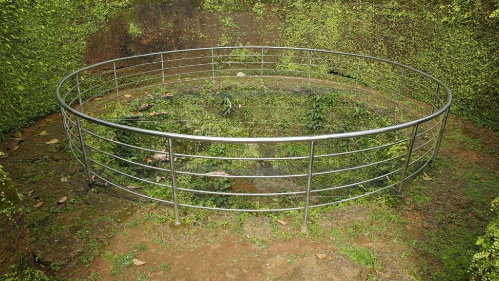

Malappuram
Malappuram (also Malapuram) (About this soundpronunciation) is a city in the Indian state of Kerala, spread over an area of 58.20 km2 (22.47 sq mi). The first municipality in the district formed in 1969, Malappuram serves as the administrative headquarters of Malappuram district. Divided into 40 electoral wards, the city has a population density of 1,742 per square kilometre (4,510 per square mile). According to the 2011 census, Malappuram metropolitan area is the fourth largest urban agglomeration in Kerala after Kochi, Calicut, and Thrissur urban areas and the 25th largest in India with a total population of 1.7 million. It is the fastest growing city in the world with a 44.1% urban growth between 2015 and 2020 as per the survey conducted by Economist Intelligence Unit (EIU) based on the urban area growth during January 2020.
Kozhippara Waterfalls

This is an enchanting scenic spot in the high ranges of Malappuram. Located near Kozhippara, the place is covered by mist all through the day. The waterfall is located on the Chokkad stream. Kozhippara waterfalls is an ideal location for trekking and swimming in Kerala. It is one of the best waterfalls, which offer plenty of opportunites to adventure enthusiast, who like to explore this spectacular destination. Kakadam Poyil, mostly engulfed in mist is a beautiful spot in the vicinity.
Thirunavaya
The land of ancient Mamankam, Tirunavaya is south of Tirur. Situated on the banks of Bharathapuzha river; it is a place of historical importance. In olden days, Mamankam a grand assembly of rulers was held once in 12 years here. Thirunavaya is a place of worship also with three temples of Brahma, Vishnu and Siva on either side of the river. The Nava Mukunda temple believed to be constructed by Nava yogis situated here is an important Vishnu temple. The river bank of the temple is considered holy and the rituals for forefathers (bali tarpana/sradha puja) are offered here.